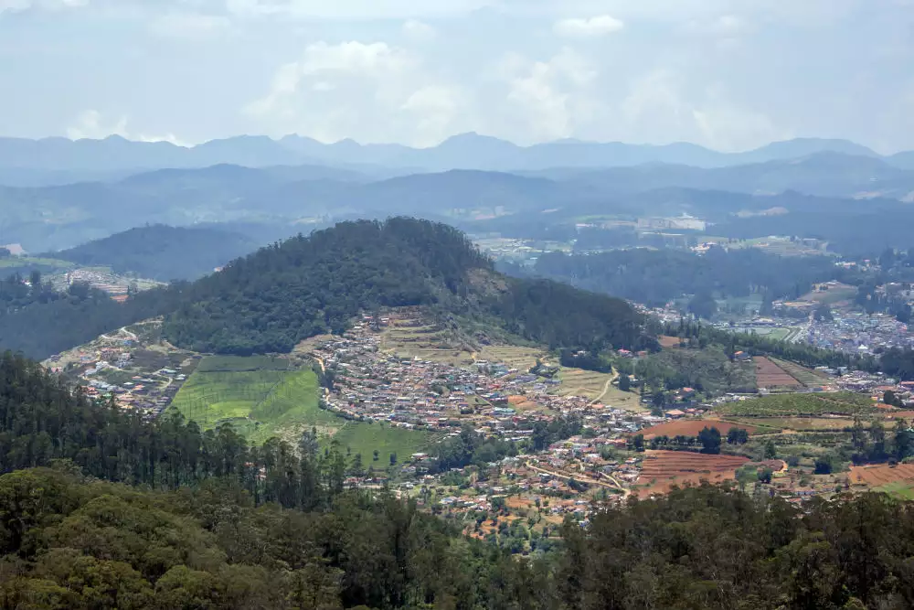
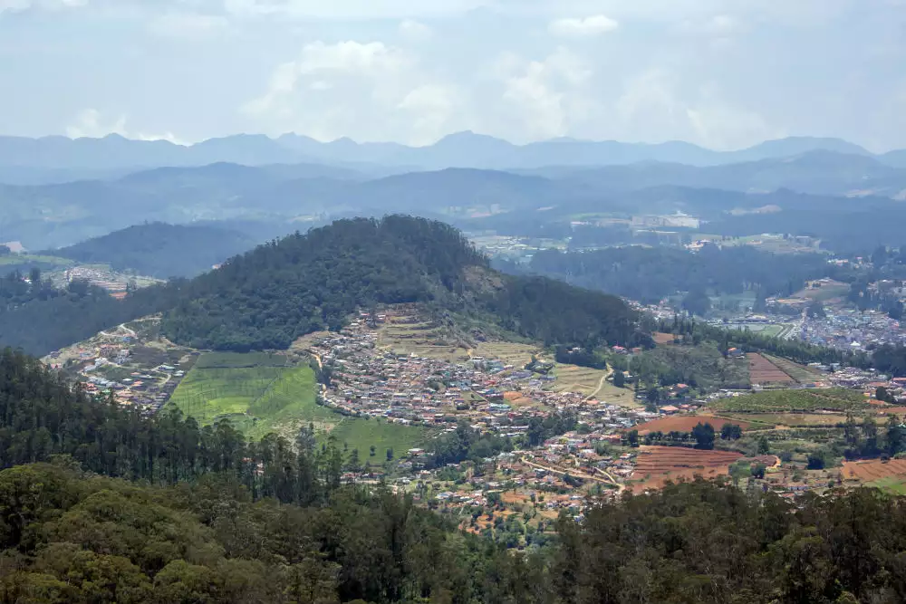

OOTY-Travel Guide: Best Place to Visit
The Nilgiris of India | June 4,2024
The Nilgiris of India | June 4,2024
Ooty, also known as Udagamandalam, is a beautiful hill station located in the Nilgiri district of Tamil Nadu. It is situated at an altitude of 2,240 meters above sea level and is known for its stunning views, cool climate, and picturesque surroundings. Ooty is a popular vacation spot for tourists from all over India and is known for its breathtaking views, colonial-style architecture, and delicious cuisine. One of the top attractions in Ooty is the Ooty Lake, which is a man-made lake that was built in 1824. It is a popular spot for boating and picnics, and visitors can also enjoy a stroll along the lake's banks and take in the stunning views of the surrounding hills. Another popular attraction in Ooty is the Botanical Gardens, which is home to a wide variety of flora and fauna. The gardens are home to over a thousand species of plants, including exotic flowers, shrubs, and trees. Visitors can also see a variety of animals, including deer and monkeys, in the gardens. One of the best ways to experience the beauty of Ooty is by taking a toy train ride on the Nilgiri Mountain Railway, which is a UNESCO World Heritage Site. The train ride takes visitors through beautiful landscapes and offers stunning views of the surroundings. If you're looking to do some shopping in Ooty, there are several markets and shops selling a wide range of items, including handmade crafts, souvenirs, and traditional clothing. In terms of accommodation, Ooty has a range of options to suit every budget, from luxury resorts to budget hotels. Most of the hotels and resorts in Ooty offer panoramic views of the surrounding hills and provide amenities such as swimming pools, spas, and restaurants. Overall, Ooty is a must-visit destination for anyone looking to escape the hustle and bustle of city life and enjoy some peace and tranquility in the lap of nature. Whether you're looking to spend some quality time with your family, go on a romantic getaway, or simply want to escape the heat and enjoy the cool climate, Ooty has something for everyone. The most popular is the toy train ride. Want to know all about it? Browse through Ooty trip blogs to dig out information on the most breathtaking rail journey in the Western Ghats. Even Shahruk could not stop himself from doing ‘Chhaiya Chhaiya’. These Ooty travel blogs will also help you find the best resorts and cottages so that you can relax and unwind amidst nature. One can never go wrong with choosing Ooty as their holiday destination.


Surrounded by the majestically-tall eucalyptus trees and dotted with green bushes along the shores, the Ooty Lake is an impressive spot in Nilgiris district. The Lake, spanning over 65 acres, was originally constructed for fishing. It was later transformed into a tourist park when the Tamil Nadu Tourism Development Corporation took over it in 1973. There are many fun activities that tourists can indulge in when they are at the Ooty Lake. Cycles are available for rent to ride around the Lake. Boating is another attraction. A tranquil ride through the waters is an attractive pastime as it lets one take in the entire beauty of the Lake. Paddle boat-, motor boat- and rowing boat services are also available. The ride offers a view of the serene greenery around and also of the distant hills. Boat races and boat pageantry are also conducted as part of the summer festival conducted here in May. There is also a garden, a mini train and an amusement park nearby. The amusement park has fun activities like a haunted house, a mirror house and horse riding, and ensures an exciting experience for children.It is one of the principal attractions in Ooty, offering visitors a delightful experience amidst beautiful natural surroundings. The best time to visit Ooty Lake is during the summer months from March to June when the weather is pleasantly cool and ideal for outdoor activities. The monsoon season, from July to September, brings lush greenery but can lead to heavy rainfall, which may limit some activities. Winter (October to February) is also a lovely time, with cool temperatures, making it perfect for those who enjoy a cold climate.
Sterling Fern Hill, does not merely dangle a carrot but entices you with entire fields full of carrot, as you approach it on the winding roads of Ooty. Carrot farms on sculpted terraced scapes adjoin the path as you make your final ascent to deliver yourself into its hilly embrace. Clamber with me onto its undulating landscape, soak in the stunning beauty of its award winning gardens, breathe deeply of its clear air and as always, stay with me as I narrate my story. Sterling Holidays is a major player providing holiday experiences in India. Established in 1986, this 33 year old company spearheaded the concept of Vacation Ownership in the country and currently stands at 33 resorts across 30 destinations. They now also project themselves as an Experiential holiday company with resorts that are categorized lightly under Forest, Hill Station, Beach, Riverside and Heritage. These options cover activities like safaris, adventure, water sports and even pilgrimages. In short, they have someplace and something for everyone !!!This is one of their older resorts which has now been renovated into a spanking new avatar. At 185 rooms, Sterling Fern Hill has the highest number of rooms among all the Sterling properties. Spread across 7 acres (that seem much larger due to the rolling expanse of land), the resort includes the main building housing the reception, coffee shop, restaurant, bar, travel desk, conference halls and office.
Emerald Lake is celebrated for its breathtaking views and lush surroundings. The lake is enveloped by rolling hills, dense woods, and rolling tea gardens, all of which contribute to its stunning landscapes. The tranquil waters, reflecting the greenery that surrounds them, create a stunning visual that attracts nature lovers, photographers, and those seeking peace. The mist that frequently blankets the area enhances the mystical aura of the lake, making it a perfect spot for early morning visits or late afternoon strolls.Visitors to Emerald Lake can engage in various activities, including boating, picnicking, and leisurely walks along the lakeside. Boating on the serene waters is especially popular, offering a unique vantage point from which to soak in the lake’s natural charm.The region surrounding Emerald Lake is rich in biodiversity. The area features a variety of flora, including eucalyptus forests and vibrant wildflowers, making it an attractive destination for botany enthusiasts.The best time to visit Emerald Lake is during the summer months from March to June when the weather is pleasant and the landscapes are lush. The monsoon season, from June to September, transforms the surroundings into a verdant paradise, while winter (October to February) brings a cool rock-climbing climate, making it suitable for those looking to enjoy the chill.Emerald Lake is not just a destination; it’s an experience that encapsulates the essence of Ooty’s natural beauty. Whether you seek adventure, quiet contemplation, or simply wish to connect with nature, this enchanting lake offers a perfect backdrop for relaxation and exploration. With its stunning scenery and diverse activities, Emerald Lake remains one of Ooty’s hidden treasures worth visiting.
 

Doddabetta Peak, the highest peak in the Nilgiri Hills, stands majestically at an elevation of 2,637 meters (8,650 feet) above sea level. Located approximately 10 kilometers from Ooty, it is a popular destination for tourists and adventure enthusiasts seeking stunning views and a connection with nature.Doddabetta is renowned for its breathtaking panoramic views. On a clear day, visitors are treated to sweeping vistas of the Nilgiri Hills, valleys, and picturesque Ooty town below. The peak is surrounded by lush forests, primarily composed of eucalyptus, pine, and flowering plants, contributing to the area's ecological richness. The mist that often envelops the region adds a mystical charm, making it a favored spot for photographers and nature lovers alike.The best time to visit Doddabetta Peak is during the summer months, from March to June, when the weather is pleasant and ideal for outdoor activities. The monsoon season (July to September) can bring heavy rains, while winter (October to February) can be quite cold, but it offers a serene atmosphere and a chance to see the beautiful misty landscapes.Doddabetta Peak is more than just a vantage point; it’s an experience that combines adventure, stunning views, and the beauty of nature. Whether you’re trekking to the summit or simply enjoying the breathtaking scenery, a visit to Doddabetta is a highlight of any trip to Ooty. Its natural charm and the allure of the Nilgiri Hills make it an essential stop for travelers exploring this enchanting region of India.